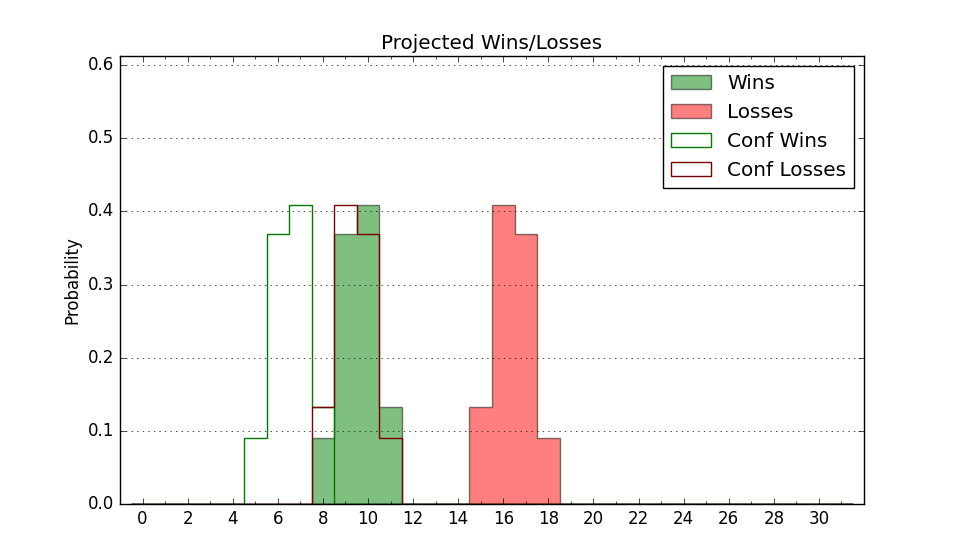

| Home | Game Probabilities | Conferences | Preseason Predictions | Odds Charts | NCAA Tournament |
| City: | Tulsa, Oklahoma | |
| Conference: | Summit (8th)
| |
| Record: | 5-8 (Conf) 8-15 (Overall) | |
| Ratings: | Comp.: -6.9 (254th) Net: -7.1 (255th) Off: 103.7 (197th) Def: 110.8 (292nd) SoR: 0.0 (147th) |
| Remaining | ||||||
|---|---|---|---|---|---|---|
| Date | Opponent | Win Prob | Pred. | |||
| 2/22 | @ Nebraska Omaha (260) | 36.7% | L 74-78 | |||
| 2/24 | @ South Dakota (321) | 55.5% | W 79-78 | |||
| 3/2 | UMKC (249) | 64.6% | W 75-70 | |||
| Previous | Game Score | |||||
| Date | Opponent | Win Prob | Result | Off | Def | Net |
| 11/6 | @UT Arlington (156) | 19.9% | L 71-75 | 3.7 | 6.7 | 10.4 |
| 11/13 | @Missouri St. (134) | 15.9% | L 69-84 | -9.6 | 7.6 | -1.9 |
| 11/17 | @Texas A&M (44) | 4.8% | L 66-74 | 16.6 | 4.1 | 20.7 |
| 11/21 | Texas Southern (292) | 75.0% | W 65-63 | -2.0 | 0.5 | -1.5 |
| 11/28 | @Kansas St. (83) | 8.5% | L 78-88 | 22.1 | -5.1 | 17.1 |
| 12/2 | Tulsa (194) | 55.0% | W 79-70 | 9.9 | 4.0 | 14.0 |
| 12/12 | @Texas Tech (25) | 3.5% | L 76-82 | 23.3 | 2.5 | 25.8 |
| 12/17 | @Oklahoma St. (116) | 12.9% | L 60-81 | -9.5 | -2.7 | -12.1 |
| 12/29 | @UMKC (249) | 34.9% | L 60-77 | -20.3 | -5.7 | -26.0 |
| 12/31 | @Denver (222) | 31.5% | W 89-86 | -3.7 | 16.2 | 12.5 |
| 1/3 | @Montana St. (241) | 34.1% | W 82-76 | 7.6 | 7.4 | 15.0 |
| 1/6 | Weber St. (133) | 39.1% | L 78-83 | 10.1 | -16.5 | -6.4 |
| 1/11 | South Dakota (321) | 80.9% | W 84-66 | -3.7 | 16.9 | 13.1 |
| 1/13 | St. Thomas MN (149) | 44.3% | L 76-87 | 0.0 | -16.0 | -16.0 |
| 1/18 | @North Dakota (227) | 32.1% | L 77-87 | 7.5 | -21.6 | -14.1 |
| 1/20 | @North Dakota St. (220) | 31.2% | L 67-72 | 1.2 | -2.7 | -1.5 |
| 1/25 | Nebraska Omaha (260) | 66.3% | W 74-67 | -3.4 | 7.1 | 3.7 |
| 1/27 | South Dakota St. (164) | 48.5% | W 87-82 | 16.4 | -9.7 | 6.7 |
| 2/3 | Denver (222) | 61.1% | W 82-76 | -7.7 | 13.9 | 6.2 |
| 2/8 | @St. Thomas MN (149) | 18.9% | L 63-85 | -9.7 | -14.8 | -24.5 |
| 2/10 | @South Dakota St. (164) | 21.7% | L 72-83 | 4.7 | -9.5 | -4.8 |
| 2/15 | North Dakota St. (220) | 60.7% | L 60-73 | -27.4 | 2.8 | -24.6 |
| 2/17 | North Dakota (227) | 61.7% | L 65-78 | -21.2 | -3.8 | -25.0 |
| Stats & Trends | |||||
|---|---|---|---|---|---|
| Current | Day | Week | Month | Season | |
| Composite | -6.9 | -0.0 | -2.6 | -4.5 | -8.9 |
| Comp Rank | 254 | -- | -42 | -61 | -118 |
| Net Efficiency | -7.1 | -0.0 | -2.6 | -3.9 | -- |
| Net Rank | 255 | -- | -40 | -49 | -- |
| Off Efficiency | 103.7 | +0.0 | -2.7 | -3.4 | -- |
| Off Rank | 197 | +2 | -50 | -71 | -- |
| Def Efficiency | 110.8 | -0.0 | +0.1 | -0.5 | -- |
| Def Rank | 292 | +1 | +2 | -1 | -- |
| SoS Rank | 156 | -- | -25 | -65 | -- |
| Exp. Wins | 9.6 | +0.0 | -1.6 | -1.7 | -5.3 |
| Exp. Conf Wins | 6.6 | +0.0 | -1.6 | -1.7 | -4.2 |
| Conf Champ Prob | 0.0 | -- | -4.9 | -5.2 | -37.6 |

| Advanced Stats | ||
|---|---|---|
| Stat | Value | Rank |
| Off Eff FG % | 0.505 | 177 |
| Off Ast Ratio | 0.121 | 308 |
| Off ORB% | 0.199 | 350 |
| Off TO Rate | 0.134 | 81 |
| Off FT Ratio | 0.276 | 312 |
| Def Eff FG % | 0.511 | 199 |
| Def Ast Ratio | 0.150 | 246 |
| Def ORB% | 0.319 | 320 |
| Def TO Rate | 0.124 | 323 |
| Def FT Ratio | 0.317 | 158 |